Fundação
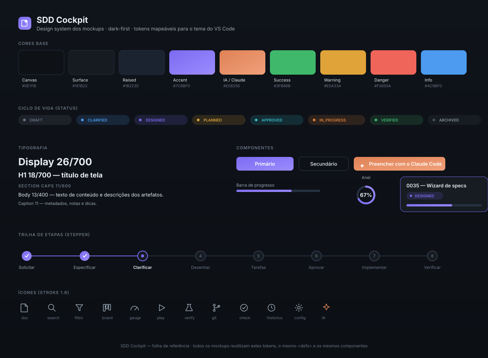
Paleta, tipografia, componentes, stepper e ícones — a base reutilizada por todas as telas.
Cockpit e visão macro
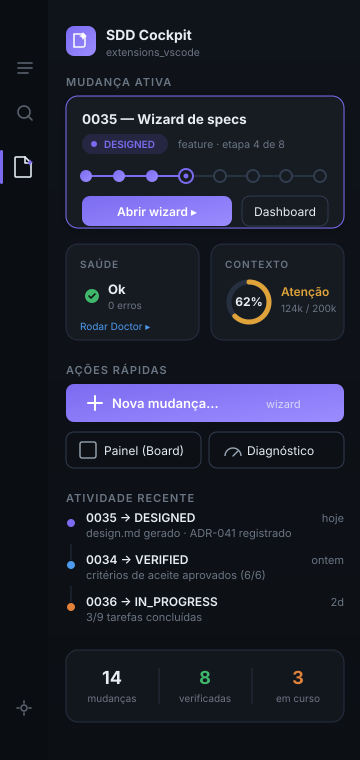
Mudança ativa com mini-stepper, saúde, contexto e atividade recente.
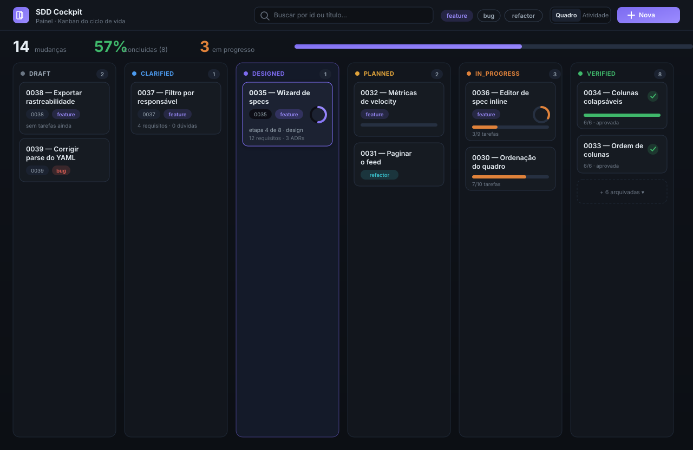
Quadro do ciclo de vida com cards ricos: anel de progresso e chips de status.
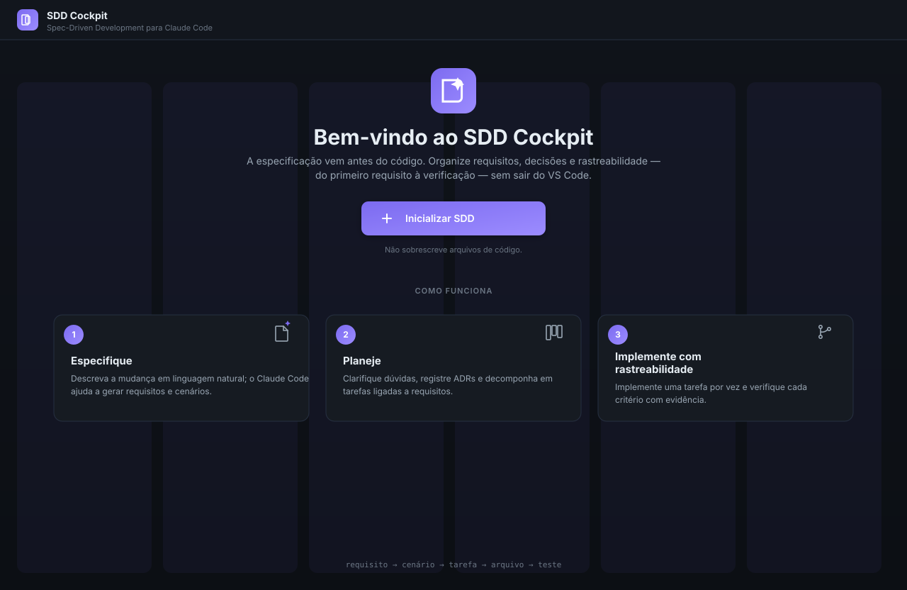
Estado inicial quando o workspace ainda não tem
.specs.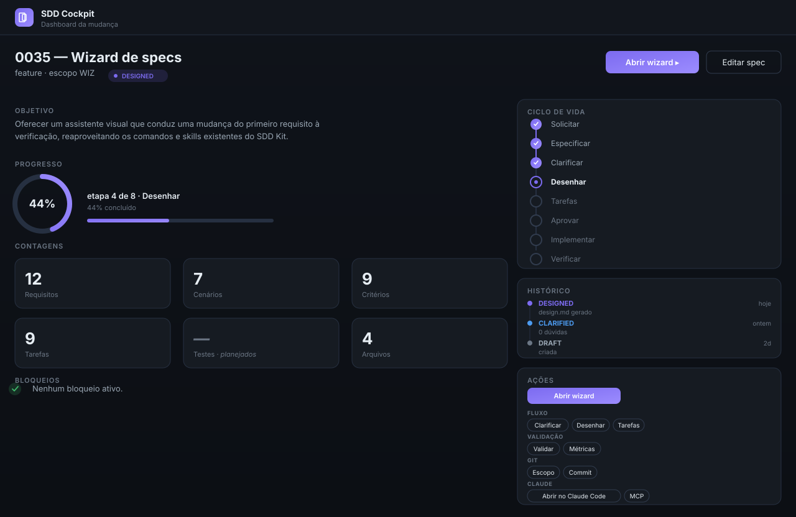
Visão de detalhe: objetivo, progresso, contagens, ciclo de vida, histórico e ações.
Wizard — as 8 etapas
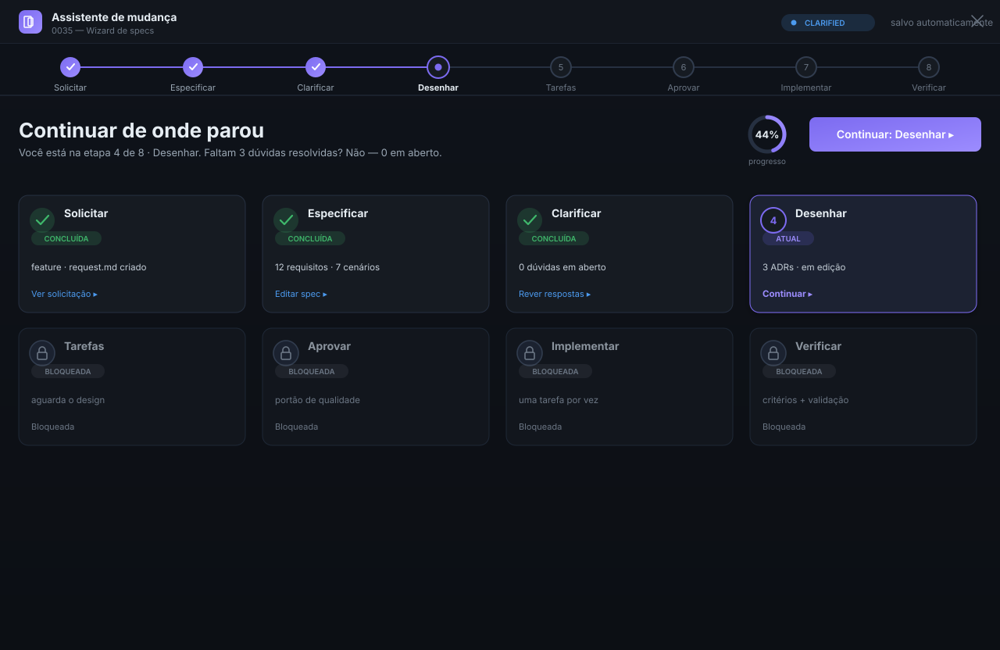
Jornada da mudança: 8 cards de etapa com estado e "continuar de onde parou".
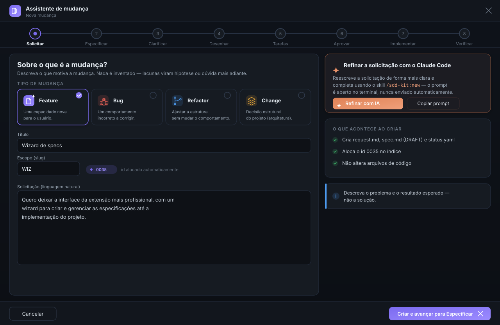
Tipo da mudança + solicitação em linguagem natural.
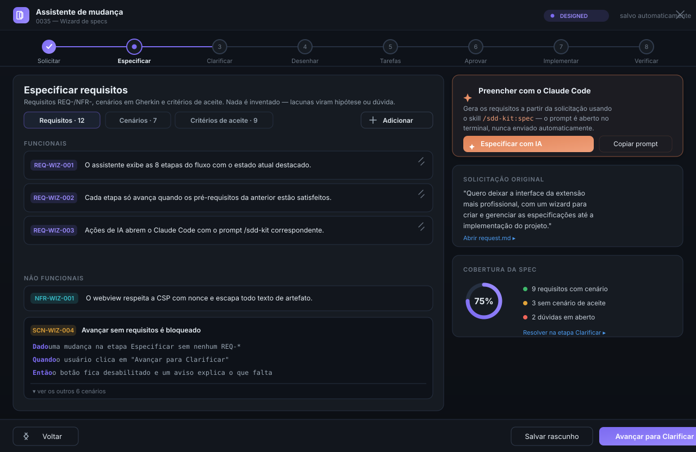
Requisitos REQ/NFR, cenários em Gherkin e critérios de aceite. (Shell de referência.)
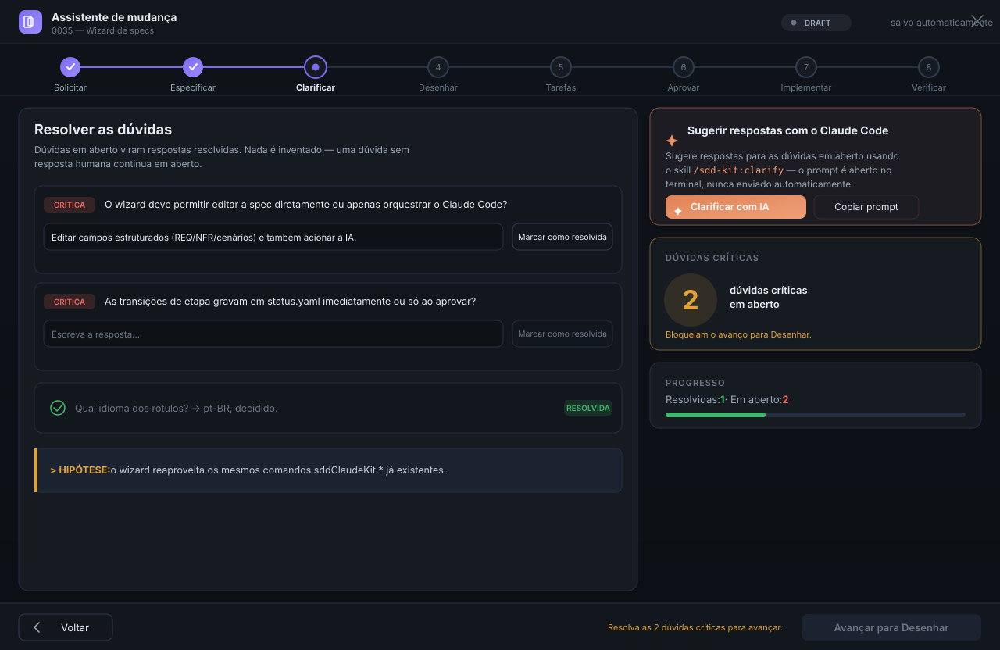
Resolver dúvidas, registrar hipóteses; portão bloqueia o avanço com dúvidas críticas.
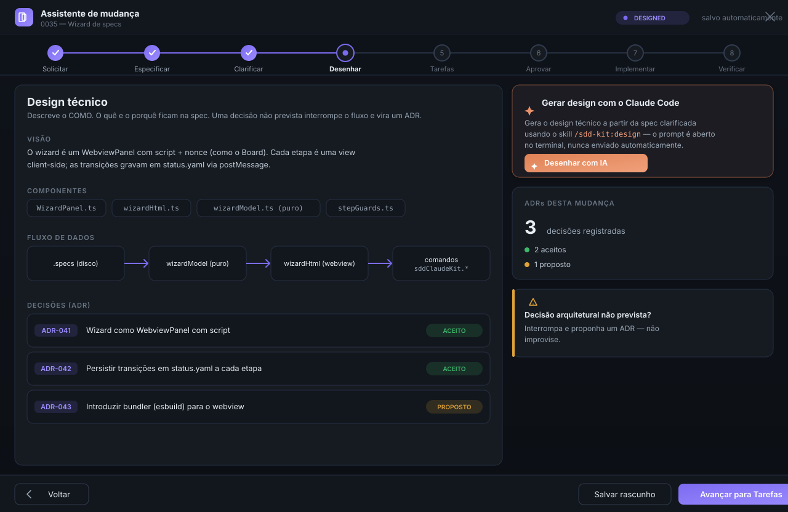
Design técnico e ADRs.
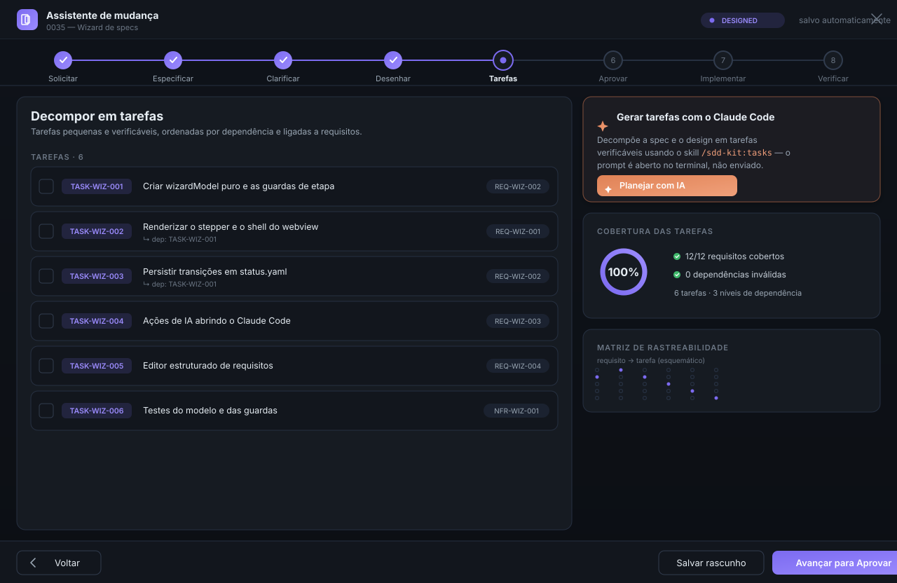
Decomposição por dependência, ligada a requisitos, com rastreabilidade.
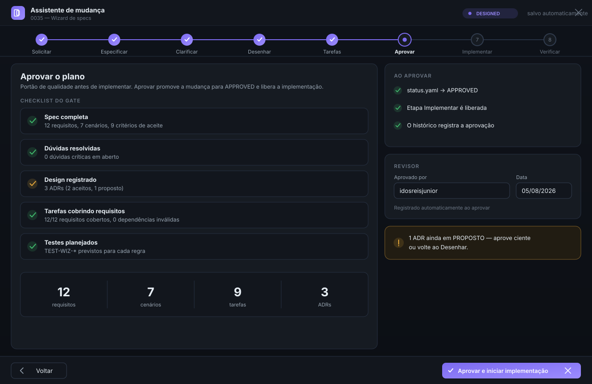
Portão de qualidade antes de implementar.
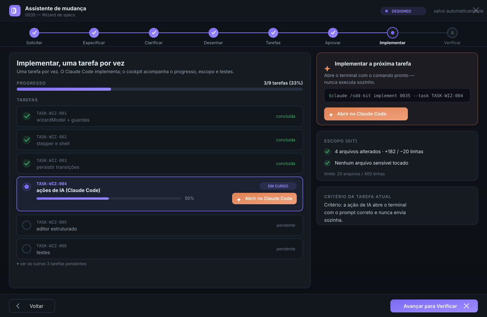
Tarefa a tarefa, com execução no Claude Code e guarda de escopo (Git).
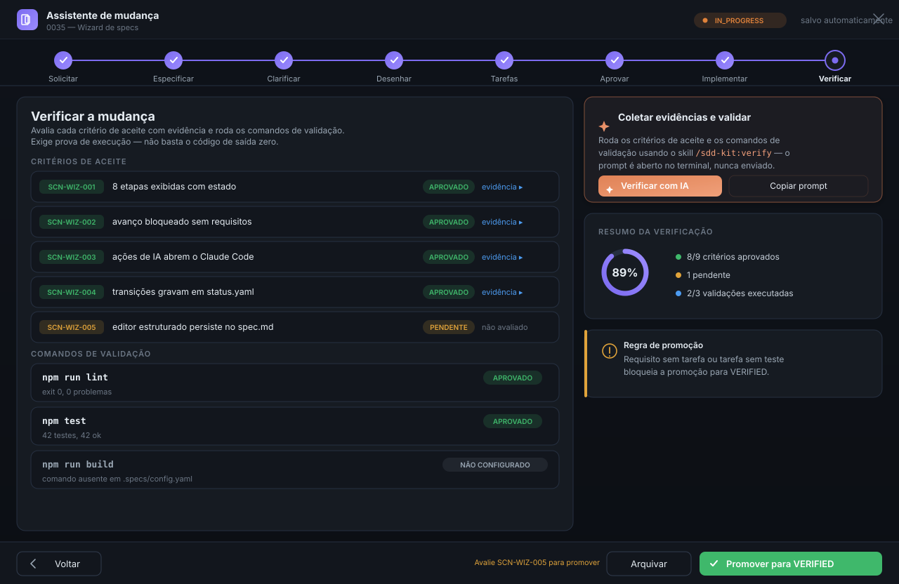
Critérios de aceite com evidência e comandos de validação (três estados).